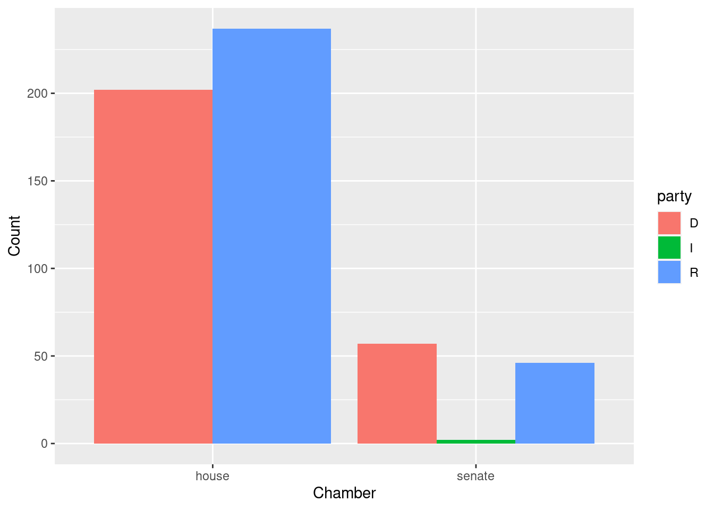
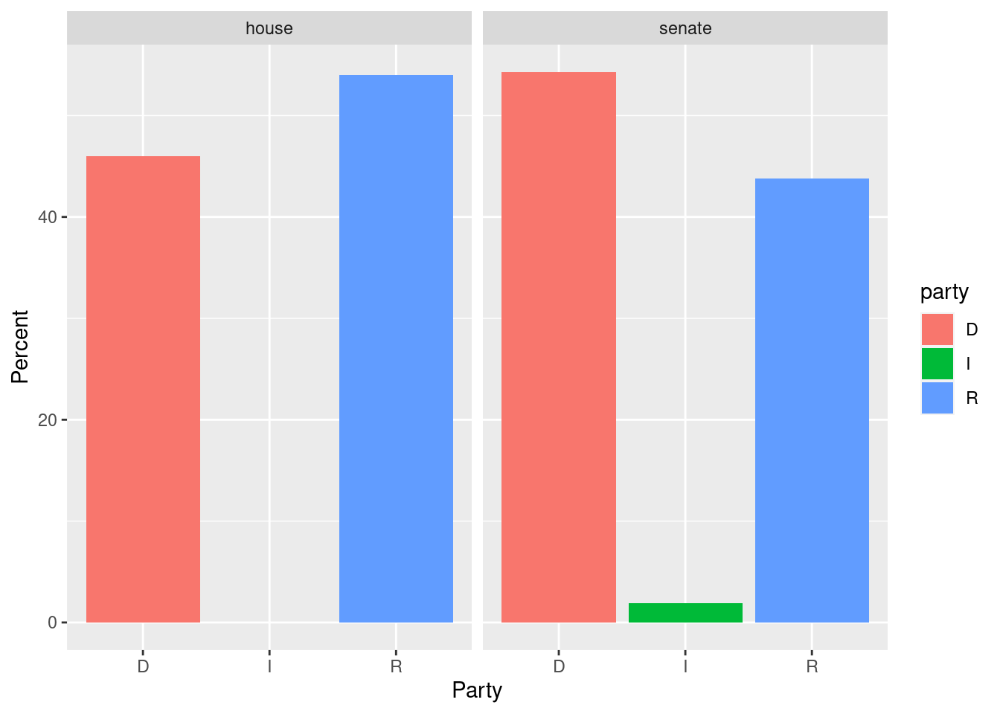
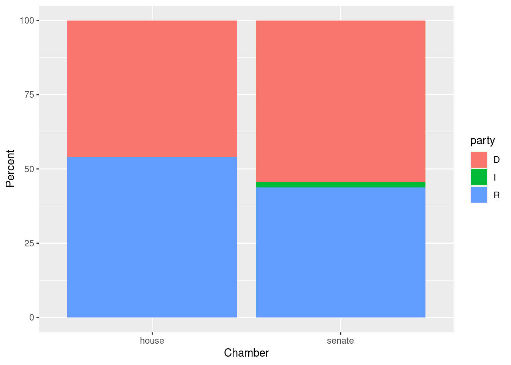
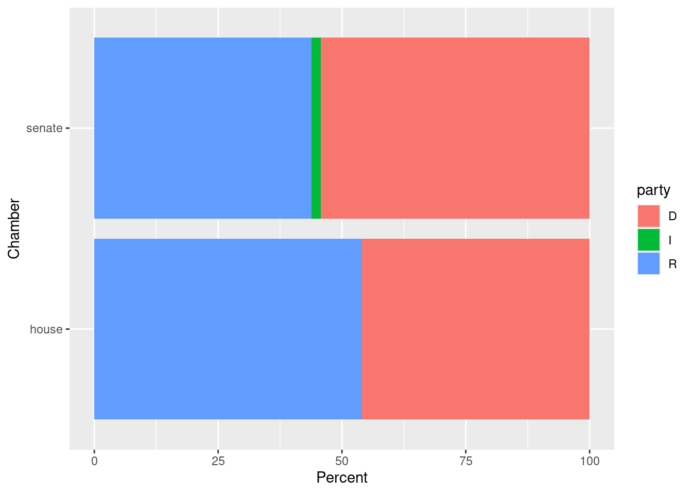

Chapter 8 Analysis of One Categorical Variable by another categorical variable
To demonstrate graphical displays of two categorical variables, we need a new dataset with two categorical variables. We use the congress_age dataframe from the fivethirtyeight package. In these displays we will use categorical variables:
- party affiliation (party) with values: D, I, R.
- congressional chamber (chamber) with values: house, senate
We will restrict ourselves to the 113th congress, a meeting of the legislative branch of the United States federal government, from January 3, 2013, to January 3, 2015, during the fifth and sixth years of Barack Obama’s presidency.
8.1 Tables
8.1.1 Base Functions
congage <- fivethirtyeight::congress_age
ds1 <- congage %>% filter(congress > 112) %>% select(congress,chamber,state,party,incumbent,age)
# We declare party and chamber as factor/categorical variables, and control their levels.
ds1 <- ds1 %>% mutate(party = factor(party,levels=c("D","I","R")),
chamber = factor(chamber))
ds1 <- ds1 %>% na.omit()
ds <- ds1
#
table(ds$chamber,ds$party)##
## D I R
## house 202 0 237
## senate 57 2 46#
mytable <- table(ds$chamber,ds$party)
#
prop.table(mytable) # cell percentages##
## D I R
## house 0.371323529 0.000000000 0.435661765
## senate 0.104779412 0.003676471 0.084558824prop.table(mytable, 1) # row percentages##
## D I R
## house 0.46013667 0.00000000 0.53986333
## senate 0.54285714 0.01904762 0.43809524prop.table(mytable, 2) # column percentages##
## D I R
## house 0.7799228 0.0000000 0.8374558
## senate 0.2200772 1.0000000 0.16254428.1.2 janitor package tools
ds %>% janitor::tabyl(chamber, party)## chamber D I R
## house 202 0 237
## senate 57 2 46#
t2 <- ds %>% janitor::tabyl(chamber, party)
t2 %>%
janitor::adorn_percentages("row") %>%
janitor::adorn_pct_formatting(digits = 2) %>%
janitor::adorn_ns()## chamber D I R
## house 46.01% (202) 0.00% (0) 53.99% (237)
## senate 54.29% (57) 1.90% (2) 43.81% (46)# column percentages
t2 %>%
janitor::adorn_percentages("col") %>%
janitor::adorn_pct_formatting(digits = 2) %>%
janitor::adorn_ns()## chamber D I R
## house 77.99% (202) 0.00% (0) 83.75% (237)
## senate 22.01% (57) 100.00% (2) 16.25% (46)# both row and column percentages
t2 %>%
janitor::adorn_percentages("all") %>%
janitor::adorn_pct_formatting(digits = 2) %>%
janitor::adorn_ns()## chamber D I R
## house 37.13% (202) 0.00% (0) 43.57% (237)
## senate 10.48% (57) 0.37% (2) 8.46% (46)8.1.3 tidyverse tools
congage <- fivethirtyeight::congress_age
ds1 <- congage %>% filter(congress > 112) %>% select(congress,chamber,state,party,incumbent,age)
# We declare party and chamber as factor/categorical variables, and control their levels.
ds1 <- ds1 %>% mutate(party = factor(party,levels=c("D","I","R")),
chamber = factor(chamber))
ds1 <- ds1 %>% na.omit()
ds <- ds1
ds %>% group_by(chamber,party) %>%
dplyr::count() %>%
tidyr::pivot_wider(names_from = party, values_from = n)## # A tibble: 2 × 4
## # Groups: chamber [2]
## chamber D R I
## <fct> <int> <int> <int>
## 1 house 202 237 NA
## 2 senate 57 46 28.1.4 gtsummary tools
congage <- fivethirtyeight::congress_age
ds1 <- congage %>% dplyr::filter(congress > 112) %>% dplyr::select(congress,chamber,state,party,incumbent,age)
# We declare party and chamber as factor/categorical variables, and control their levels.
ds1 <- ds1 %>% mutate(party = factor(party,levels=c("D","I","R")),
chamber = factor(chamber)) %>% dplyr::select(party,chamber)
ds1 %>%
na.omit() %>%
gtsummary::tbl_summary(
by = chamber,
statistic=gtsummary::all_categorical() ~ "{n} / {N} ({p}%)")| Characteristic | house, N = 4391 | senate, N = 1051 |
|---|---|---|
| party | ||
| D | 202 / 439 (46%) | 57 / 105 (54%) |
| I | 0 / 439 (0%) | 2 / 105 (1.9%) |
| R | 237 / 439 (54%) | 46 / 105 (44%) |
| 1 n / N (%) | ||
8.2 Graphical Displays
# basic bar plot of party affiliation
ggplot(data=ds, mapping=aes(x=party)) +
geom_bar() +
labs(x="Party", y="Count")
ds <- ds1 %>% group_by(party,chamber)
#
ggplot(data=ds, mapping=aes(x=chamber)) +
geom_bar(aes(fill=party),position="dodge") +
labs(x="Chamber", y="Count")
#
ggplot(data=ds, mapping=aes(x=party)) +
geom_bar(aes(fill=party)) +
facet_wrap( ~ chamber) +
labs(x="Party", y="Count")# The next display attempts to use percentages on the vertical axis defined within chamber.
# This means the next command must list chamber as the FIRST group_by variable.
ds <- ds1 %>% group_by(chamber,party) %>%
summarise (n = n()) %>%
mutate(pct = 100*n / sum(n))
#
ds## # A tibble: 5 × 4
## # Groups: chamber [2]
## chamber party n pct
## <fct> <fct> <int> <dbl>
## 1 house D 202 46.0
## 2 house R 237 54.0
## 3 senate D 57 54.3
## 4 senate I 2 1.90
## 5 senate R 46 43.8#
ggplot(data=ds, mapping=aes(x=party, y=pct)) +
geom_bar(aes(fill=party),stat="identity") +
facet_wrap( ~ chamber) +
labs(x="Party", y="Percent")
ds1 <- congage %>% filter(congress > 112) %>% select(congress,chamber,state,party,incumbent,age) %>%
mutate(party = factor(party,levels=c("D","I","R")),
chamber = factor(chamber)) %>%
na.omit()
#
ds <- ds1 %>% group_by(chamber,party) %>%
summarise (n = n()) %>%
mutate(pct = 100*n / sum(n))
#
ggplot(data=ds, mapping=aes(x=chamber,y=pct,fill=party)) +
geom_col() +
labs(x="Chamber", y="Percent")
ds1 <- congage %>% filter(congress > 112) %>% select(congress,chamber,state,party,incumbent,age) %>%
mutate(party = factor(party,levels=c("D","I","R")),
chamber = factor(chamber)) %>%
na.omit()
#
ds1 %>% group_by(chamber,party) %>%
summarise (n = n()) %>%
mutate(pct = 100*n / sum(n)) %>%
ggplot(data=., mapping=aes(x=chamber,y=pct,fill=party)) +
geom_col() +
coord_flip() +
labs(x="Chamber", y="Percent")